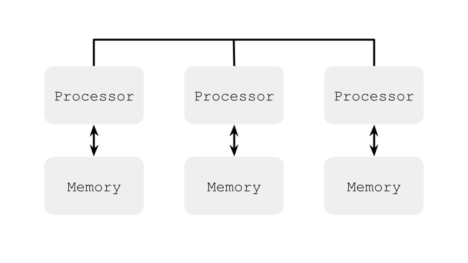

Лекция 1.1. Введение и мотивация
Закон Мура и «The free lunch is over?»
Количество транзисторов удваивается каждые два года, частота ядра раньше также росла экспоненциально, но в двухтысячных перестала. Производительность отдельно взятого ядра с тех пор стала расти медленнее, стали ускоряться за счёт большего числа ядер.
Закон Амдала
N – число потоков, P – доля параллельного кода, S - ускорение кода
$$ S = \frac{Time\ on\ 1\ core}{Time\ on\ N\ cores} = \frac{1}{1 - P + \frac{P}{N}} $$
при \(N \to \infty \) максимальное ускорение кода \( \frac{1}{1 - P} \)
Параллелизм на уровне инструкций (ILP)
Нет зависимости по данным, (1) и (2) можно выполнить параллельно.
e = a + b // 1
f = c + d // 2
Способы использования ILP:
- Конвейер
- Суперскалярное исполнение
- Внеочередное исполнение
- Переименование регистров
- Спекулятивное исполнение
- Предсказание переходов
- Длинное машинное слово (VLIW)
- Векторизация (SIMD)
Примеры архитектуры многопроцессорных компьютеров
Симметричная мультипроцессорность (SMP)

Ассиметричный доступ к памяти (NUMA)

Виды многопоточных систем:
- Одновременная многопоточность (SMT) – в каждый данный момент может исполняться несколько потоков.
- Временная многопоточность (TMT) – в каждый данный момент может исполняться только один поток.
Операционные системы
Типы операционных систем
- Однозадачные
- Система с пакетными заданиями (batch processing)
- Многозадачные / с разделением времени (time-sharing)
- Кооперативная многозадачность (cooperative multitasking)
- Вытесняющая многозадачность (preemptive multitasking)
Основные понятия в современных ОС
- Процесс – владеет памятью и ресурсами. ОС создаёт иллюзию того, что каждый процесс имеет абстрактную вычислительную систему в своём полном распоряжении.
- Поток – контекст исполнения внутри процесса. В одном процессе может быть несколько потоков, все потоки работают с общей памятью процесса.
- В научных работах исторически сложилось называть потоки процессами и использовать большие буквы:
P,Q, ...
В теории мы их будем смешивать, хоть это и некорректно
Формализм
Нужна формальная модель параллельных вычислений для того, чтобы использовать её в доказательствах корректности алгоритмов, а также невозможности построения тех или иных алгоритмов и минимально-необходимые требования для тех или иных алгоритмов.
А ещё формальная модель нужна для формализации отношений между прикладным программистом и разработчиком компилятора и системы исполнения кода.
Модели программирования
- «Классическое» однопоточное / однозадачное (можем использовать ресурсы многоядерной системы только запустив множества разных, независимых задач)
- Многозадачное программирование (можем использовать ресурсы многоядерной системы в рамках решения одной задачи)
- Модель с общей памятью (рассматриваем в рамках этого курса)
- Модель с передачей сообщений (распределенное программирование)
Общие объекты
Потоки выполняют действия над общими, разделяемыми объектами. В этой модели не важны операции внутри потоков: вычисления, обновления регистров процессора, обновления регистров потока.
Общие переменные
Это простейший тип общего объекта, базовый строительный блок для многопоточного алгоритма. У общих переменных есть операции чтения и записи, а также значение определенного типа.
Модель с общими переменными – это хорошая абстракция современных многопроцессорных систем и многопоточных ОС. На практике, это общая память процесса, которая доступна для чтения и записи всем потокам, исполняемым в данном процессе.
В теоретических трудах общие переменные часто называют регистрами.
Многопоточные программы в общем случае недетерминированы, в отличие от однопоточных программ. Поэтому мы говорим, что программа А имеет свойство Р, если программа А имеет свойство Р при любом исполнении.
Моделирование работы программы
Рассмотрим модель чередования, где исполнение потоков чередуется в произвольном порядке. Тогда у нижеуказанной программы есть три исхода, она не может завершиться в состоянии {0, 0}.
@JCStressTest
@State
@Outcome(id = "0, 1", expect = Expect.ACCEPTABLE)
@Outcome(id = "1, 0", expect = Expect.ACCEPTABLE)
@Outcome(id = "1, 1", expect = Expect.ACCEPTABLE)
public class SimpleTest1 {
int x;
int y;
@Actor
public void threadP(IntResult r) {
x = 1;
r.r2 = y;
}
@Actor
public void threadQ(IntResult r) {
y = 1;
r.r1 = x;
}
}
Однако на практике у нас всё сломалось, все четыре результата возможны, при этом {1, 1} реже всех. Почему? Потому что тестировали на TSO (Total Store Order) модели памяти, где операции записи кладутся в буфер, и чтение в некоторых случаях было выполнено раньше, чем запись «дошла» до памяти.